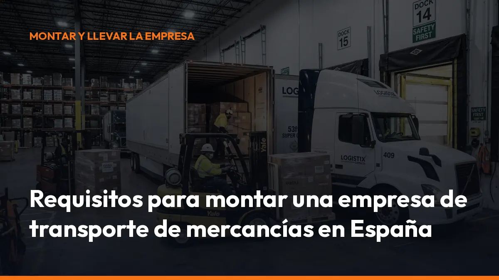

Requisitos para montar una empresa de transporte de mercancías en España

La buena noticia es que puedes organizarlo paso a paso y empezar con un solo vehículo. En esta guía encontrarás los principales requisitos para montar una empresa de transporte por carretera en 2026.
Importante: los trámites pueden variar según el tipo de vehículo, el ámbito nacional o internacional y la comunidad autónoma donde establezcas la empresa. Antes de iniciar la actividad, comprueba tu caso concreto ante la Administración competente.
1. Elige cómo vas a trabajar: autónomo o sociedad
El primer paso es decidir la forma jurídica de tu negocio.
Trabajar como autónomo
Es la opción más sencilla si vas a empezar solo y conducirás tu propio vehículo.
Necesitarás:
- Darte de alta en Hacienda, mediante el modelo 036 o 037.
- Elegir el epígrafe del IAE correspondiente a la actividad de transporte.
- Darte de alta en el RETA, el Régimen Especial de Trabajadores Autónomos.
- Declarar el domicilio fiscal y la actividad que vas a desarrollar.
- Cumplir las obligaciones de IVA, IRPF y facturación.
Como autónomo, puedes comenzar con una estructura reducida y controlar directamente la actividad. También asumirás personalmente la responsabilidad económica del negocio.
Crear una sociedad
Puedes constituir una Sociedad Limitada (S.L.) si vas a trabajar con varios socios, contratar conductores o gestionar una flota.
La sociedad necesitará:
- Denominación social.
- Escritura pública de constitución.
- NIF de la empresa.
- Alta en Hacienda.
- Inscripción en el Registro Mercantil.
- Objeto social que incluya el transporte de mercancías.
- Cuenta bancaria y contabilidad propia.
La S.L. ofrece una separación mayor entre el patrimonio personal y el empresarial, aunque implica más trámites, costes de gestión y obligaciones contables.
Consejo práctico: si empiezas solo con una furgoneta o un camión, valora el autónomo. Si quieres crear una flota, contratar personal o incorporar socios, estudia una sociedad desde el principio.
2. Obtén el título de transportista
Uno de los requisitos centrales para montar una empresa de transporte de mercancías es acreditar la competencia profesional para el transporte.
Este requisito se conoce habitualmente como:
- Título de transportista.
- Certificado de competencia profesional.
- Capacitación profesional.
- Gestor de transporte.
La empresa debe contar con una persona que tenga esta capacitación y que ejerza realmente las funciones de gestión del transporte.
El gestor debe controlar, entre otras tareas:
- La contratación de servicios.
- El mantenimiento de los vehículos.
- La documentación de transporte.
- La organización de rutas.
- El cumplimiento de los tiempos de conducción y descanso.
- La gestión de incidencias y sanciones.
Si eres autónomo, puedes ser tú mismo el gestor de transporte si dispones del certificado. Si constituyes una sociedad, la persona que ejerza esta función debe mantener una relación real y efectiva con la empresa, según las condiciones exigidas por la normativa.
Sin este requisito, no podrás operar correctamente con las autorizaciones que lo exijan.
Empieza por aquí: comprueba si necesitas obtener el certificado, contratar un gestor de transporte o acreditar la capacitación mediante una persona vinculada a tu empresa.
3. Cumple el requisito de honorabilidad
La honorabilidad es otra condición necesaria para ejercer como transportista.
La Administración puede comprobar que la empresa y el gestor de transporte no han cometido infracciones o delitos que impidan desarrollar la actividad.
Puedes perder la honorabilidad por motivos como:
- Infracciones muy graves en materia de transporte.
- Incumplimientos reiterados de los tiempos de conducción y descanso.
- Manipulación del tacógrafo.
- Transporte sin autorización.
- Incumplimientos graves relacionados con la seguridad vial.
- Delitos relacionados con la actividad profesional.
La honorabilidad no es un documento que debas solicitar cada año. Es una condición que debes conservar durante toda la actividad.
Resultado práctico: mantener un control documental ordenado te ayuda a detectar errores antes de una inspección y a proteger la continuidad de tu empresa.
4. Demuestra la capacidad financiera
La normativa exige que acredites que tienes recursos suficientes para mantener los vehículos y desarrollar la actividad.
Para vehículos de transporte sujetos al régimen completo, la referencia habitual es:
9.000 € para el primer vehículo
5.000 € por cada vehículo adicional
Esta cantidad puede acreditarse mediante capital, reservas, garantía bancaria u otros medios aceptados por la Administración.
Ejemplo:
- 1 vehículo: 9.000 €
- 2 vehículos: 14.000 €
- 3 vehículos: 19.000 €
No confundas la capacidad financiera de una empresa transportista con los requisitos de una agencia, operador de transporte o empresa intermediaria. Cada autorización puede tener condiciones diferentes.
Si vas a trabajar con vehículos ligeros, especialmente entre 2,5 y 3,5 toneladas en transporte internacional, revisa con atención el régimen aplicable. En determinados servicios internacionales se exigen requisitos similares a los de los vehículos pesados.
Antes de comprar el vehículo, confirma la cuantía que te corresponde. Así evitarás invertir en una unidad que después no puedas adscribir a la autorización.
5. Compra o alquila el vehículo adecuado
No necesitas una flota mínima de varios camiones para empezar. En muchos casos puedes solicitar la autorización con un solo vehículo, siempre que cumplas las condiciones exigidas.
El vehículo puede estar:
- En propiedad.
- En arrendamiento financiero.
- En alquiler, cuando el régimen aplicable lo permita.
También debe cumplir las condiciones técnicas y administrativas correspondientes:
- ITV en vigor.
- Ficha técnica válida.
- Matriculación y documentación correctas.
- Seguro obligatorio.
- Adecuación a la carga que vas a transportar.
- Equipamiento de seguridad.
- Mantenimiento documentado.
Si vas a trabajar en zonas urbanas o realizar transporte internacional, revisa también las restricciones ambientales y las zonas de bajas emisiones.
Una decisión incorrecta de compra puede comprometer tu rentabilidad desde el primer día. Elige el vehículo según la carga, las rutas, la MMA y el tipo de autorización que necesitas.
6. Solicita la tarjeta de transporte
Para realizar transporte público de mercancías por carretera necesitas la autorización administrativa correspondiente. Esta autorización se vincula a los vehículos y se refleja en la llamada tarjeta de transporte.
Las más conocidas son:
Autorización MDL
Se utiliza, con carácter general, para vehículos ligeros destinados al transporte discrecional de mercancías.
Autorización MDP
Se aplica a vehículos pesados de transporte público de mercancías, normalmente aquellos que superan las 3,5 toneladas de MMA.
La autorización exige cumplir requisitos de establecimiento, documentación, vehículos y, según el caso, competencia profesional, honorabilidad y capacidad financiera.
La información y los trámites pueden consultarse en la página de preguntas frecuentes del Ministerio de Transportes y en los procedimientos de tu comunidad autónoma, como la información sobre autorizaciones MDL y MDP de la Comunidad de Madrid.
No empieces a transportar por cuenta ajena sin autorización. Trabajar sin la tarjeta correspondiente puede provocar sanciones, inmovilización del vehículo y problemas con tus clientes.
7. Inscríbete en el registro de empresas transportistas
Una vez concedida la autorización, la empresa debe figurar correctamente en el Registro de Empresas y Actividades de Transporte.
Este registro permite identificar:
- El titular de la actividad.
- Los vehículos autorizados.
- El tipo de transporte.
- El domicilio de la empresa.
- El gestor de transporte.
- La situación administrativa de la autorización.
Mantén actualizados los datos de la empresa. Si cambias de domicilio, vehículo, gestor o forma jurídica, revisa si debes comunicarlo.
8. Contrata los seguros obligatorios y recomendables
El seguro obligatorio principal es el seguro de responsabilidad civil de circulación para cada vehículo.
Además, para trabajar con seguridad y responder ante tus clientes, suele ser recomendable contratar:
- Seguro de responsabilidad civil del transportista.
- Seguro de mercancías o cobertura de daños a la carga.
- Responsabilidad civil general de la empresa.
- Seguro de accidentes para conductores.
- Asistencia en carretera.
- Cobertura jurídica.
La póliza debe adaptarse al tipo de mercancía, rutas, límites de responsabilidad y condiciones de tus contratos.
No elijas únicamente por precio. Una cobertura insuficiente puede generar pérdidas importantes si la mercancía se daña, se pierde o provoca daños a terceros.
9. Cumple tus obligaciones fiscales y laborales
Después de poner en marcha la empresa, tendrás que mantener una gestión constante.
Obligaciones fiscales
Según seas autónomo o sociedad, tendrás que gestionar:
- IVA trimestral y anual.
- IRPF, si trabajas como autónomo.
- Impuesto sobre Sociedades, si tienes una S.L.
- Facturación y libros contables.
- Retenciones de trabajadores o profesionales.
- Declaraciones informativas.
- Pagos fraccionados.
Obligaciones laborales
Si contratas conductores, tendrás que cumplir:
- Alta en Seguridad Social.
- Contratos de trabajo.
- Nóminas y cotizaciones.
- Prevención de riesgos laborales.
- Convenio colectivo aplicable.
- Formación CAP.
- Tiempos de conducción, pausas y descansos.
- Gestión de vacaciones y bajas.
Documentación de transporte
Organiza y conserva correctamente:
- Documentos de control.
- Cartas de porte.
- Contratos y órdenes de carga.
- Justificantes de entrega.
- Registros del tacógrafo.
- Documentación del vehículo.
- Facturas y albaranes.
Con Mi Carga puedes generar y gestionar documentación digital desde el móvil, incluso en la cabina y durante la ruta. Accede a la suscripción de Mi Carga y empieza con 10 portes de prueba que no caducan.
10. Pasos para montar tu empresa de transporte
Este es el orden práctico que puedes seguir:
1. Elige autónomo o sociedad. 2. Date de alta en Hacienda y Seguridad Social. 3. Acredita la competencia profesional. 4. Comprueba la honorabilidad. 5. Demuestra la capacidad financiera. 6. Compra o alquila el vehículo adecuado. 7. Contrata el seguro obligatorio y las coberturas necesarias. 8. Solicita la tarjeta MDL o MDP. 9. Comprueba tu inscripción en el registro de empresas transportistas. 10. Organiza la fiscalidad, la documentación y la gestión diaria. No necesitas resolverlo todo de golpe. Empieza por definir el tipo de transporte, el vehículo y las rutas que vas a realizar. Después, tramita la autorización que corresponde a tu actividad.
¿Cuánto cuesta montar una empresa de transporte?
El presupuesto depende de varios factores:
- Forma jurídica.
- Precio del vehículo.
- Entrada o cuotas de leasing.
- Capacidad financiera exigida.
- Seguros.
- Gestoría.
- Combustible.
- Mantenimiento.
- Autorizaciones.
- Salarios, si contratas conductores.
- Sistemas de documentación y control.
El vehículo suele ser la mayor inversión, pero no es el único coste. Calcula también los gastos fijos de los primeros meses para evitar quedarte sin liquidez antes de cobrar tus primeros servicios.
Si vas a trabajar con varios conductores, puedes solicitar un presupuesto cerrado a Mi Carga. Si eres autónomo y conduces tú solo, puedes contratar el plan desde 10 € al mes más IVA, sin permanencia y con portes ilimitados.
Empieza con seguridad y sin complicaciones
Montar una empresa de transporte de mercancías es viable si sigues el orden correcto: forma jurídica, capacitación, honorabilidad, capacidad financiera, vehículo, autorización, seguros y obligaciones fiscales.
No arranques con documentación incompleta. Revisa tu autorización, organiza tus portes y digitaliza la gestión desde el primer día.
Con Mi Carga puedes emitir documentos directamente desde el móvil, mantener la trazabilidad de tus servicios y reducir el papeleo de la cabina.
Empieza hoy: activa tu suscripción o escríbenos por WhatsApp al +34 744 716 449. Te ayudamos a poner en marcha una gestión documental rápida, sencilla y preparada para tu empresa de transporte.
Genera tus 10 primeros documentos gratis con Mi Carga
DeCA, carta de porte y ADR, en PDF, con QR y archivo automático en la nube.
Empezar con 10 documentos gratisArtículo informativo. Consulta siempre el caso concreto de tu operación. ¿Dudas? Escríbenos.